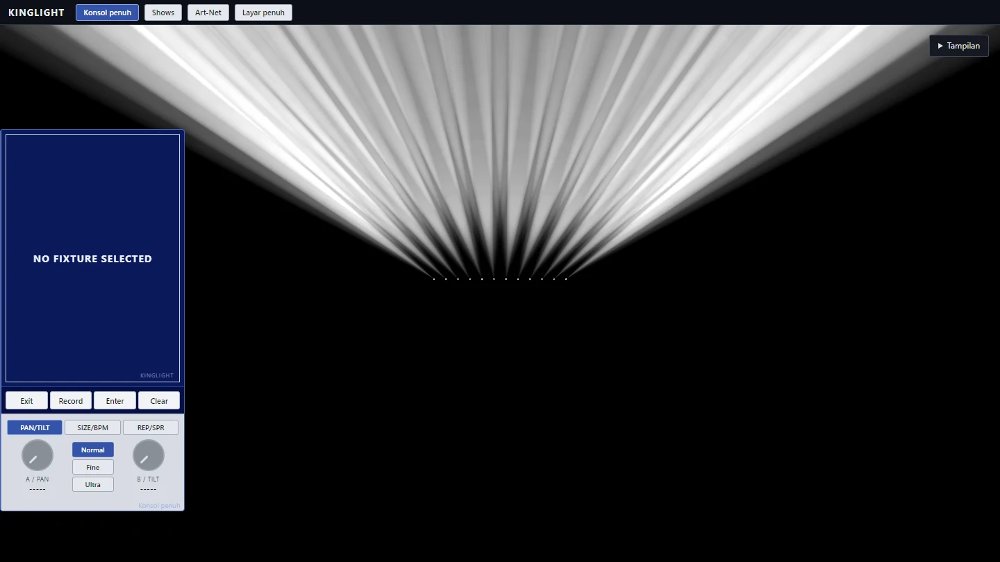

Simulator konsol lighting
Kinglight
Latih show lighting lewat konsol virtual. Lihat gerakan beam sebelum mengirim Art-Net.
Menyiapkan unduhan.

Pratinjau belum dapat ditampilkan. Coba muat ulang halaman.
Dapatkan Kinglight.
Pilih installer Windows atau versi portable. Detail rilis dan SHA-256 tersedia di bawah.
Memuat
Menyiapkan unduhan
Mencari rilis yang tersedia.
Tiga langkah sampai beam pertama.
Alur singkat memakai simulator desktop Kinglight.
-
Buka simulator
Jalankan installer, atau ekstrak versi portable lalu buka
Kinglight.exe. -
Pilih fixture dan Shape
Buka unit konsol penuh, pilih Shape, lalu tekan Play Shape.
-
Lihat hasilnya
Atur size, speed, dan spread. Art-Net opsional untuk lampu fisik.
Yang perlu disiapkan.
Kebutuhan dasar untuk menjalankan Kinglight di Windows.
- Sistem
- Dibaca dari rilis.
- Berkas
- Dibaca dari rilis.
- Runtime
- Microsoft Edge WebView2 Runtime.
- Jaringan
- Art-Net opsional untuk lampu fisik.
- Akun
- Tidak perlu akun.
Sumber Kinglight.
Kode sumber, rilis, dan data rilis.